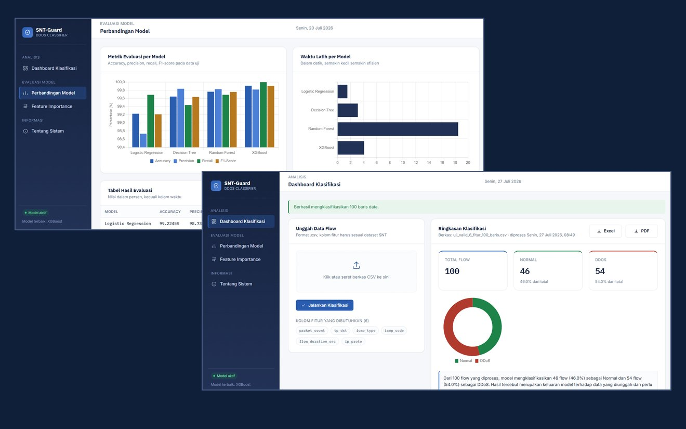
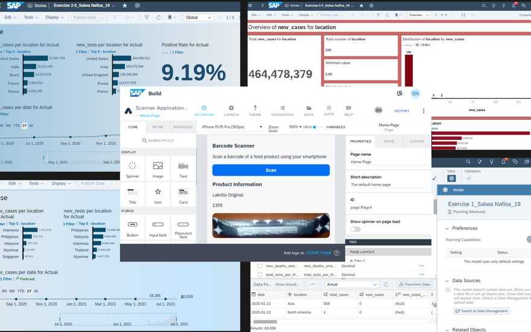
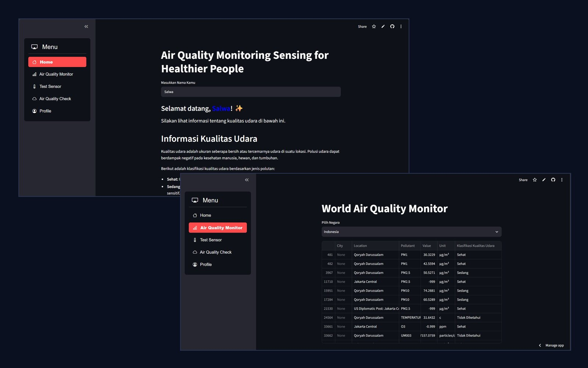
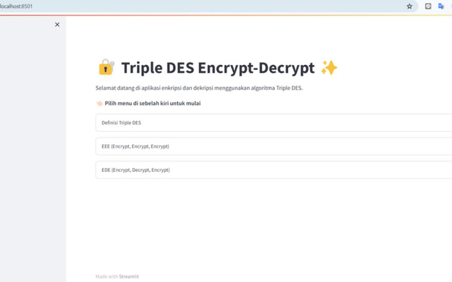
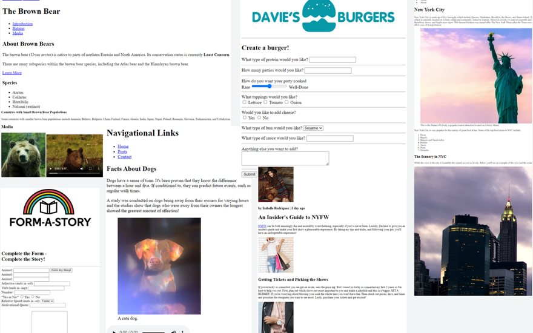
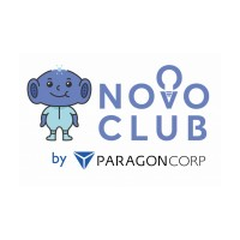

Education
UPN "Veteran" Jakarta
B.Sc. Informatics · 2022 to 2026
GPA 3.89
Hello, I'm
Aspiring |
Informatics graduate from UPN "Veteran" Jakarta with a strong interest in data analytics and machine learning. I build end-to-end projects, from data preprocessing and model evaluation to web deployment.
01 / About
I love the moment a messy spreadsheet suddenly starts telling a story.
That curiosity pulled me into data, and it shaped my four years in Informatics at Universitas Pembangunan Nasional "Veteran" Jakarta (GPA 3.89, class of 2026). My thesis compares several machine learning models to classify DDoS attacks, and I shipped the result as SNT-Guard, a Flask web app anyone can try.
Before that, my team and I built AQMonitoring, an IoT air quality dashboard that took us to the semi-finals of Samsung Innovation Campus Batch 5. I have also handled employee data at the Ministry of Transportation, kept WiFi running at Java Jazz Festival, and written for indozone, which taught me to stay detail-oriented, explain technical things simply, and keep calm when something breaks.
I'm now aiming for a data analyst or data scientist role where I can keep learning fast and turn data into decisions people can actually use.
UPN "Veteran" Jakarta
B.Sc. Informatics · 2022 to 2026
GPA 3.89
Data Analytics & ML
Preprocessing, visualization, model evaluation, deployment
ELPT 497 · Upper Intermediate
UPA Bahasa UPN "Veteran" Jakarta, Feb 2026
02 / Skills
03 / Projects

Compared four machine learning models to detect DDoS traffic, chose the best one with a weighted scoring method, and shipped it as a Flask web app (XGBoost, 99.91% accuracy).

Part of the ASEAN Data Science Explorers program: analyzed and forecast COVID-19 data across ASEAN and globally, and built a barcode scanner app with SAP Build Apps to retrieve product information.

A Streamlit dashboard that monitors air quality by country and classifies pollutant readings (PM1, PM2.5, PM10, O3) as healthy or moderate. Built with my team for Samsung Innovation Campus Batch 5, where we became semi-finalists (2023/2024).

A Streamlit app where users enter text and keys, choose EEE or EDE mode, and get the encrypted or decrypted result directly in the browser.

A series of website interfaces: a blog, a food ordering menu, an informative animal page, and a form submission site, built with HTML, CSS, and JavaScript.
New projects will be added here.
04 / Experience
Java Jazz Festival 2025 · Jakarta
Ministry of Transportation of the Republic of Indonesia · Jakarta
Himpunan Mahasiswa Informatika (HIMA) UPNVJ · Jakarta
indozone · Jakarta
Samsung Innovation Campus Batch 5 · Samsung Electronics Indonesia x Skilvul
05 / Communities

Feb 2024 to Dec 2024Member (ParaNovo)
A free national student community by ParagonCorp that bridges campus and the professional world. I joined to sharpen my leadership, soft skills, and teamwork through innovation and collaboration.
Community member
A network of young leaders across regions who learn together and plan real social-impact actions. I'm part of it to grow my leadership and collaborate beyond my campus.
Community member · Green & Social pillars
One of Indonesia's largest youth communities, built on #LearnAndShare. I joined the Green and Social pillars to take part in environmental and community-impact activities.
06 / Certificates
Certificate of Competence · Indonesian Professional Certification Authority (BNSP), via LSP UPN "Veteran" Jakarta
9 competency units
Industry certification by Certiport, a Pearson VUE business
Verification
Verify at verify.certiport.com with code uuHA-XaAR
Samsung Electronics Indonesia x Skilvul · 2023/2024
Our team was selected as a semi-finalist for the final project "Air Quality Monitoring Sensing for Healthier People", an IoT and AI solution that reads air quality from sensors and presents it on a web dashboard.
UPA Bahasa, UPN "Veteran" Jakarta · Prediction test (PBT)
Breakdown
DQLab · 23 Sep 2024
Dicoding Indonesia · 20 Sep 2024
Verify →Dicoding Indonesia · 14 Mar 2024 · 16 hours
Verify →MySkill x Deloitte · Free Intensive Bootcamp · 22 Feb 2024
SAP, ASEAN Foundation, Dampak Sosial Indonesia · SAP Analytics Cloud and SAP Build Apps, 260 min
IBM SkillsBuild · 25 Aug 2025
Verify on Credly →Dicoding Indonesia · 23 Jun 2024 · 30 hours
Verify →Samsung Innovation Campus Batch 5 · 2 to 24 Mar 2024
Samsung Innovation Campus Batch 5 · 20 to 27 Apr 2024
Samsung Innovation Campus Batch 5 · 18 May to 27 Jul 2024
Wadhwani Foundation · 30 May 2023
Wadhwani Foundation · 6 Feb 2024
07 / Contact
I'm open to internship and entry-level opportunities in data analytics. Feel free to reach out.